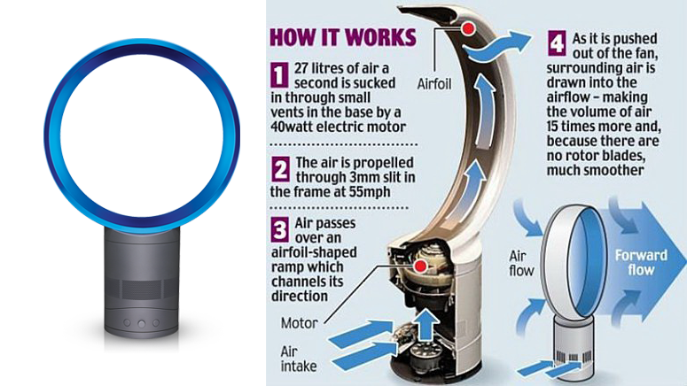
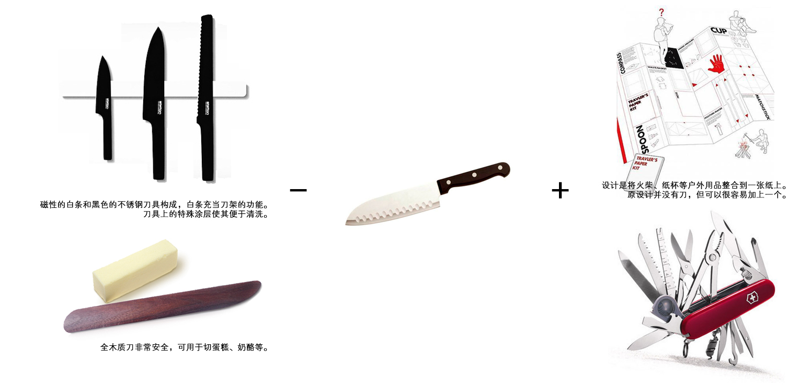
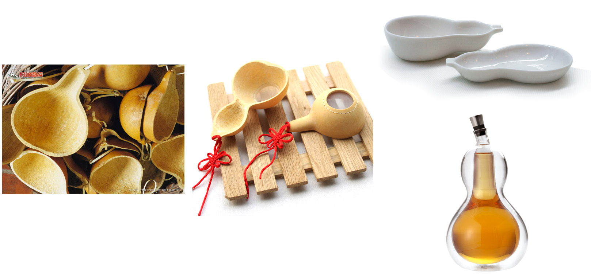
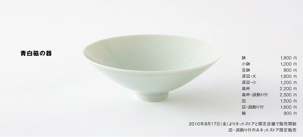
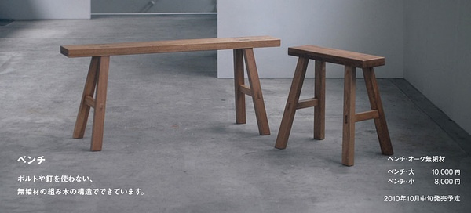
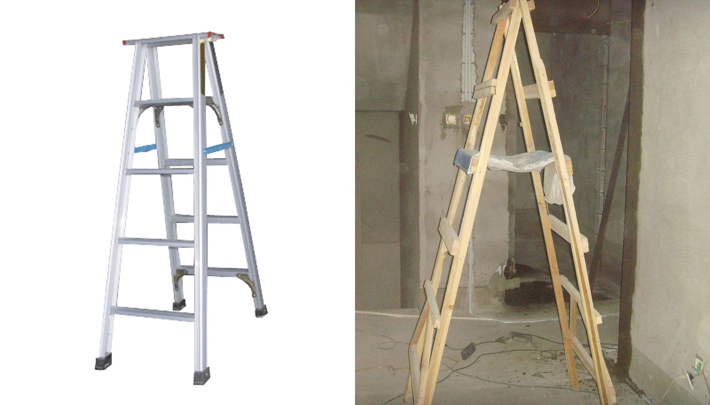
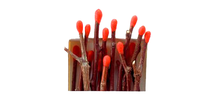

作为一名设计师，有时大家都过多关注“原创”设计（original design)，而忽视了“好”设计(good design）。这里特别想分享下自己对原创的理解和如何创新做设计。
我们不妨先问自己几个问题:
1、什么是原创。
从来没有过的就是原创？如果是的话，从来没有过如何定义？是不是自从有了刀之后，所有关于刀的设计都不算是原创？有了莱特的飞机后，所有后来的飞机都不是原创？
2、什么程度可以叫原创？
3、“原创==好”吗？
这三个问题都不好回答，但我还是试图给出自己的答案。
1和2可以合并：原创性取决于我们对这个词的理解和一个人的信息范围。举个例子，瑞士军刀整合了各种工具，但它还是基于刀这个原型。Dyson无叶风扇在原理上借鉴了喷气飞机，但仍然是个风扇。还有即便你认为的原创有可能在地球的某个角落已经实现了，但这不重要。有人认为校内网、YIXI是在模仿facebook 和TED，但我觉得可以说他们原创性低，但在一定人群中，他们提供了原创性。特别是YIXI的平台以中文为媒介语言，找的都是中国人，这一点就与TED很不相同。
3、原创！=（不等于）好。有时候，过度追求原创反而会影响“好”，”Don’t try to be original, just try to be good”(密斯）。真正好的设计在于给受众提供价值，这一点特别重要。而价值又分很多种类，按马斯洛的五个层级来说分：生理需求（活得下去）、安全需求（活的安定）、社交需求（活的开心）、尊重需求（活的体面）和自我实现（活的极致）（Wikipedia，高层次需求并不一定在低层次需求满足之后）。还是拿Dyson风扇来说，首先所有风扇都在满足一个“凉快”的生理需求，但针对安全需求普通风扇选择了加一个罩子包住叶片，Dyson用空气动力学知识把叶片去掉完成了安全的诉求，到这一步风扇之间并无不同。但Dyson的设计使得擦洗风扇变得很容易，满足了活的开心的需求，其有无叶创新带来的生活品质的变化（你在家面对它，及朋友来你家看到它的感受）在某种程度上满足了活的体面的需求。仅此而已，足以使他成为一个伟大的产品，但其中的每一步都不容易。Dyson工作原理

如何进行原创&好的设计？
这个问题对我来说很难回答，因为自己没有做出什么特别好的东西，但我发现原创&好的东西都有几个规律，比如：+ —（加减），类比的方式对传统物品进行再设计。（两者并不互斥）
需要说明的是，+ —并不只是形态上的变化，最终要的是背后对于价值的挖掘,价值需求从生理 —> 情感。

类比可以借鉴传统存在的产品，用新的工艺、材料用心进行诠释：

张永和对葫芦瓢的设计（最右）


MUJI对中国瓷碗和条凳的设计

蕴涵工匠智慧的梯子（布兜可以有效解决放工具、钉子等问题。）
那么如何定义下面这种设计呢？
